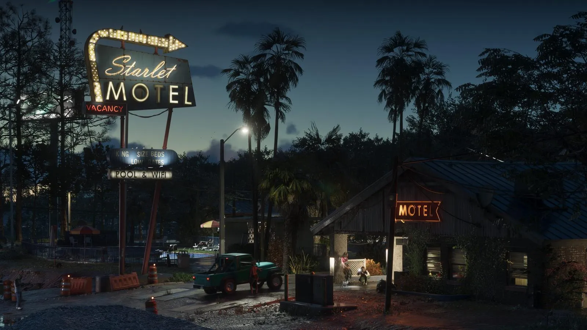
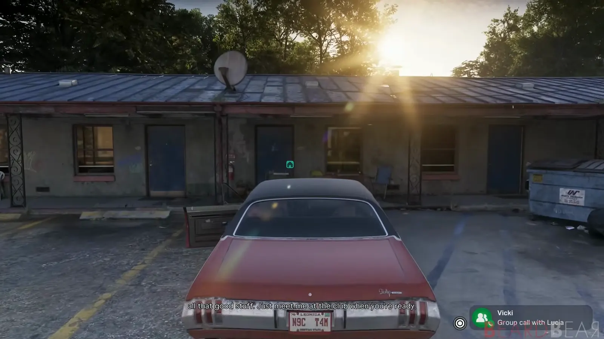
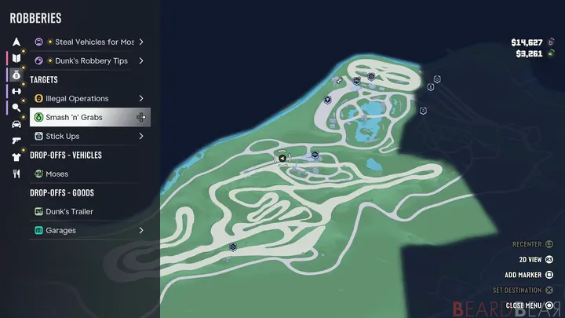
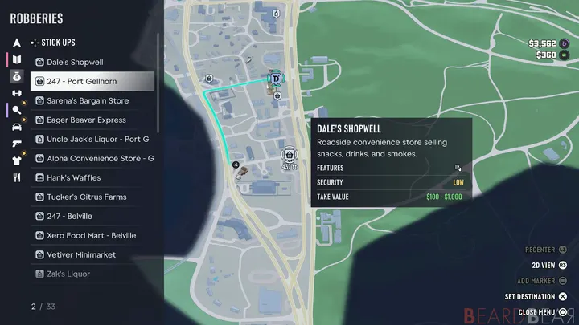
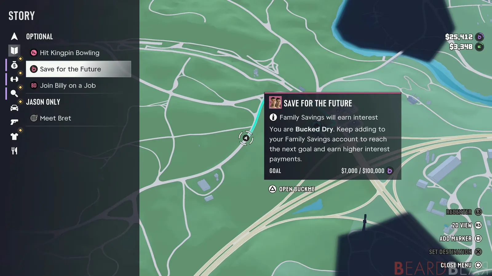

Глава 2 GTA 6: необязательные задания, деньги и что не пропустить
Опубликовано:

- Помимо 11 сюжетных миссий, в главе 2 больше десятка мелких заданий — счёт за мотель, стрижка, одежда, налёты, штрафстоянка.
- Деньги — обязательны: на номер нужно $900, а на переезд в Вайс-Сити — $15 000.
- В Kingpin Bowling лежит уникальный дробовик Gutterball Moreland 850 и часы, а за побег — трофей Let’s Go Bowling.
- Финал главы (Checking Out) — точка невозврата: мотель как дом пропадёт.
Мотель: счёт, быт, Джейсон
| Задание | Что сделать | Детали |
|---|---|---|
| Overnight Charges | поговорить с Линдой на ресепшене | Линда требует деньги сразу. Если в главе 1 вы купили Лусии цепочку, она отдаст её в залог — и миссия закроется. Осмотрите карту на стене, чтобы открыть Port Gellhorn |
| Behind on Payments | заплатить Линде $900 | тогда же вернут цепочку; деньги — с машин Мозесу, ограблений касс или уличных грабежей |
| Take Care of Jason | возвращаться в мотель в конце каждого дня | каждый визит — плюс к отношениям; закроется само после Breakfast Run |
| New Look | любая стрижка в салоне Pearl House | около минуты |
| How Do I Look? | верх и низ в магазине Bargain World на юге Port Gellhorn | подойдёт любая одежда |
| Painkiller Supplier | ждать двух звонков Данка | ускоряется, если проходить другие миссии главы; ведёт к Slam Dunk |
| Pick Up A Gun | купить или забрать оружие в Gellhorn Outfitters (Ammu-Nation) | оружие из прошлого можно взять в зелёном шкафчике |

Налёты после Coffee Break
После миссии Coffee Break на карте разом появляются четыре дела — их нужно пройти все, порядок любой.
| Задание | Что сделать | Детали |
|---|---|---|
| Hit Avery Pawn | ограбить ломбард вместе | пригрозить персоналу, разбить витрины; персонал может назвать код сейфа (в гайде PowerPyx — 6499, но код может быть случайным). Разбитая витрина — 2 звезды. Добычу сдать в трейлере Данка |
| Hit Kingpin Bowling | ограбить точку Kolts в боулинге | позовите напарника (→ + △ / Y); заранее купите 5 Zombix, броню и липкие бомбы для сейфа. Три ценности: дорогие часы (юго-восточная комната), уникальный дробовик Gutterball Moreland 850 (бильярдный стол в северо-восточном углу) и сейф (кабинет на северо-востоке). За побег — трофей Let’s Go Bowling |
| Impounded Vehicle | забрать машину Лусии со штрафстоянки | зелёный значок машины у полиции Port Gellhorn: проломить забор, сесть, уйти от 2 звёзд |
| Thrillbillies | Mud Club — задание Билли | грязевые гонки; Push Square относит его к сюжету главы 2 |
Если пропустили что-то в боулинге, точка восстановится в главе 3 через несколько игровых недель — трофей не потерять.
Штрафстоянка: личную машину увозят, если совершать в ней преступления и бросить её в зоне поиска полиции. Угнанные машины — нет. Забрать машину можно и через Scooter Bros за деньги, а премиум-подписка за $12 500 даёт бесплатные ежедневные кредиты на это.




$15 000 на переезд
Задание Prepare for Vice City требует накопить $15 000 вдвоём — без этого финальная миссия Checking Out не появится. Держите деньги на BuckMe. Что приносит деньги в главе 2:
| Источник | Сколько |
|---|---|
| Afternoon Delight (сейф Delights) | $10 000 |
| Slam Dunk | $1 700 + около $1 000 с тела Билла |
| Daily Driver | $1 250 + $500 за целую машину |
| Машины Мозесу | от $1 000 за штуку |
| Avery Pawn, Kingpin Bowling | зависит от того, сколько вынесете |
| Задание Билли Twist Wrist, Smash, Grab | — |
| Veteran Hunted (охота с Бретом, только Джейсон) | — |

Частые вопросы
Сколько денег нужно для переезда в Вайс-Сити?
$15 000 (задание Prepare for Vice City) — иначе Checking Out не откроется.
Как вернуть цепочку Лусии в GTA 6?
В Overnight Charges Лусия оставляет её в залог; вернёте, когда заплатите $900 за номер (Behind on Payments).
Где Gutterball Moreland 850?
На бильярдном столе в северо-восточном углу Kingpin Bowling — во время задания Hit Kingpin Bowling.
Источники: PowerPyx — «Overnight Charges», «Behind on Payments», «Take Care of Jason», «New Look», «How Do I Look?», «Painkiller Supplier», «Pick Up A Gun», «Coffee Break», «Hit Avery Pawn», «Hit Kingpin Bowling», «Impounded Vehicle», «Prepare for Vice City», «Checking Out», 18–19.11.2026; Push Square, 19.11.2026; Of Zen and Computing (трофеи), 19.11.2026.